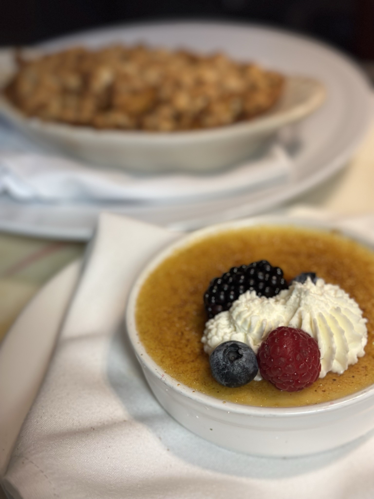

Our Mission
Sweet Food Stories was created to celebrate the connection between food and memories. Every dish has a story, and every story brings people together. This space is dedicated to sharing the flavors, traditions, and sweet moments that make each recipe special.
Why Sweet Food Stories?
Food is more than ingredients and instructions — it’s culture, family, and emotion. Whether it’s a dessert passed down through generations or a new recipe discovered by accident, every dish carries a memory worth sharing. Sweet Food Stories brings those memories to life.
